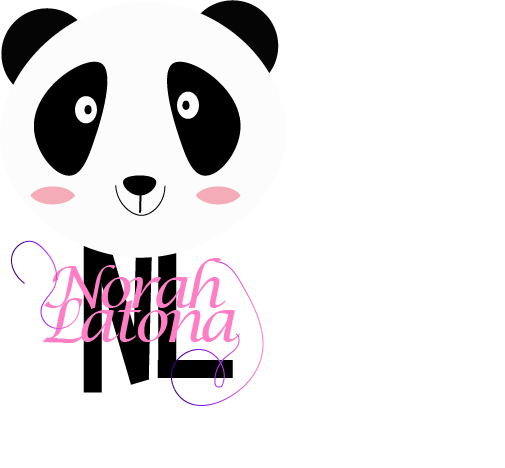

Hi I am Norah Latona
Experience Designer,
Digital Artist & Illustrator
Hi, I am a UX Designer Who is passionate about Digital Arts
I have a bachleors in Computer Science & with 3 years of experience in different fields including Education/ Learning technologies & Hospitatlity.I am passionate about ux research, ux design, ,requirement gathering & analysis. I am especially passionate about enhancing user experiences to create quality products that offer real value to both business and users. To achieve this seamlessly I strongly believe in a common ground were business needs meets user needs.......
Process

Emphasize
Building Key understanding of the problem & the problem domain is vital for the success of any project. In this phase i start by collecting quantative and qualitiave data to answer the overarching questions and understand users needs and painpoints to aid in creating a delightful experience for the user.
Keyskills
Tools
Define
Once I have solid understanding and after however many iteration i can safely move to analyze and present my data and synthesis in an easy to understand representation for my stakeholders, this includes Creating Affinity diagrams, Charts,User personas,Use cases and other various Diagrams.
Keyskills
Tools
Ideate
The Purpose of this Ideate phase is to widen our pool of possibilites by coming up with a variety of ideas or solutions using different methods such as Crazy 8, Detailed sketches..etc This often includes multiple sessions and out of the box idea generation or unconvental idea that normally wouldn’t be considered as solutions won’t be considered to solve the problem.
Keyskills
Tools
Prototype
During this phase Themes, Oppourtunity,features & flows are defined & prioterized using variety of techniques/frameworks,.The end goal of this phase is to produce a hi-fidelty prototype that is mostly free from errors and flaws thanks to the many iterations.
Keyskills
Tools
Test
During this phase Themes, Oppourtunity,features & flows are defined & prioterized using variety of techniques/frameworks,.The end goal of this phase is to produce a hi-fidelty prototype that is mostly free from errors and flaws thanks to the many iterations.
Keyskills
Tools
Projects